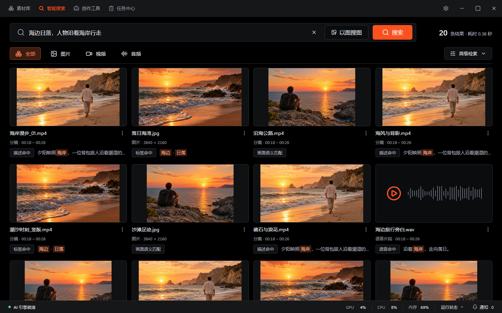
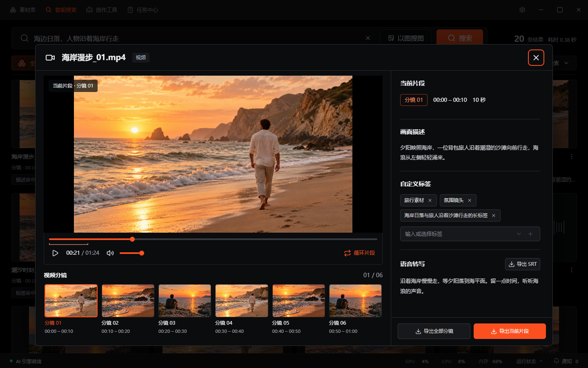

本机处理与数据边界
本机建库、索引、分镜与搜索在电脑上完成，不向素刀公网服务上传原始素材。可选局域网共享与外部模型会按功能传输数据，详见下方联网与隐私说明。
不再依赖文件夹层级和文件名记忆，让 AI 理解你的画面内容。
本机建库、索引、分镜与搜索在电脑上完成，不向素刀公网服务上传原始素材。可选局域网共享与外部模型会按功能传输数据，详见下方联网与隐私说明。
输入 "海边日落"、"产品特写" 或 "人物微笑"，即可同时检索图片与视频片段，支持以图搜图。
启用人物索引后，在本机分析图片与视频分镜中的人脸并自动归组，支持命名、合并和手动整理。
添加素材源后自动全量建库，后续文件增删改实时进入后台任务队列，无需手动维护。
从素材源配置到自然语言搜索，素刀把复杂的本地索引过程简化为几步操作。

按图片、视频或音频筛选，查看命中依据，再打开对应素材。

预览分镜、查看时间范围和已有描述，找到合适的片段后继续使用。
截图来自新版素刀，素材、搜索结果与运行状态均为示例。
支持文件夹、整盘符与外接硬盘，自动排除系统目录和开发缓存，避免误扫。
支持常见位图与 CR2、CR3、NEF、ARW、DNG 等相机 RAW 格式，建立索引后用画面描述查找。
基于 本地AI 自动分镜，配合 ffmpeg 抽取代表帧，让视频内容也能被语义检索。
扫描、分镜、抽帧、索引全部队列化，单个任务失败不会阻塞整体建库。
一个搜索框同时返回命中的图片与视频片段，可按类型筛选。
点击即可打开原文件或定位目录，视频结果直达对应时间段；异常时一键导出诊断包。
素刀，能多做什么
用画面描述找图片与视频镜头，用说话内容定位音视频，按人物归集素材，再把选中的分镜送入剪辑。
此处在两项预设示例中匹配关键词，不运行 AI 检索。可以试试“人物”或“海浪”；更多素材见在线体验。
选中分镜 00:18 — 00:26
沿着海岸，走向落日。
无需先打标签，
直接搜图片与视频分镜。
搜索视频镜头，
结果带起止时间。
开启转写后，
按说话内容定位。
图片与分镜按人物归集，
可修正。
携带原片与选中范围，
衔接剪映 / PR。
横向滑动查看五项能力，左侧保留产品名称。
| 产品 | 画面搜索 | 分镜定位 | 语音检索 | 人物归组 | 剪辑衔接 |
|---|---|---|---|---|---|
| 无需先打标签 | 结果带起止时间 | 按说话内容定位 | 按人物归集，可修正 | 衔接剪映 / PR | |
| Eagle | 依赖已有文字 | 官网未提及 | 官网未提及 | 官网未提及 | 插件选段导出 |
| 交付范围未提及 | 官网未提及 | 官网未提及 | 官网未提及 | 官网未提及 |
官网未提及：所引官方资料未说明该完整流程，不等于不支持。
需建立索引；转写、人物按需启用；剪辑需配套环境。
核对日期
素刀 v2.6.0 / Eagle 4.0.0 Build23 与所列插件 / Billfish 公开资料。查看使用条件
配音、图片清晰化与视频增强集中在一处，按需安装，在本机处理。
新版创作工具总览，安装与运行状态为示例。
查看原图无需复杂的导入流程，像添加文件夹一样简单。
首次启动自动解压加载本地AI服务，并检测组件健康状态。
选择素材目录、盘符或外接硬盘，素刀预检路径、去重并配置排除规则。
图片直接索引，视频自动分镜抽帧，所有任务在后台队列中稳定执行。
输入描述，获取图片与视频片段混合结果，点击即可打开源文件与时间码。
任何被海量本地素材困扰的创作者，都值得拥有更直觉的检索方式。
快速定位过往素材中的可用片段，不用逐条浏览文件夹。
管理日积月累的拍摄素材，一句话找到想要的场景与画面。
用描述性语言定位参考图与样片，无需依赖严格的命名规范。
团队共享素材盘时，成员可以用自然语言快速共享与复用历史素材。
关于隐私、格式与使用方式的快速解答。
本机建库、索引、搜索、分镜与抽帧在本机完成。首次激活、许可验证、组件下载和更新检查等需要联网；完成所需组件安装并保持有效许可后，核心本机处理不依赖云端推理。可选局域网共享使用局域网；创作助手和外部视觉模型需要访问你配置的模型服务。
图片支持 JPG、JPEG、PNG、WebP，以及 CR2、CR3、NEF、ARW、DNG 等相机 RAW 格式；视频支持 MP4、MOV、MKV、AVI、WebM。后续版本会持续扩展更多格式。
素刀 使用 TransNetV2 对视频进行分镜，再用 ffmpeg 抽取每个分镜的代表帧，最后将代表帧送入本地语义索引。搜索时，你看到的是代表帧，点击即可打开原视频并跳转到对应时间段。
可以。素刀 支持文件夹、整盘符以及外接硬盘路径作为素材源，并会针对盘符级扫描提供默认排除规则，避免扫描系统目录。
本机索引与缓存保存在本机，不向素刀公网服务上传原始素材。局域网共享默认关闭，仅用于可信局域网，使用 HTTP 明文传输搜索词、主动选择的查询图片、预览和按需原文件。启用外部视觉 API 时会发送选定图片或视频采样帧，创作模型会收到相关对话和描述文字；这些可选功能不是完全离线处理。
下载素刀，让你的图片与视频素材用自然语言搜索。